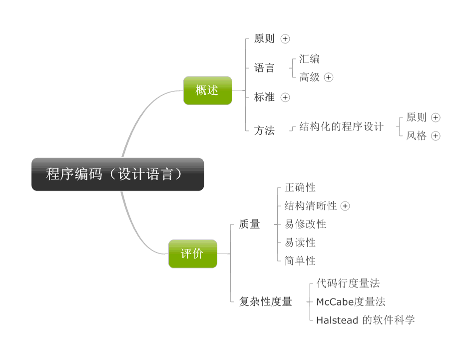
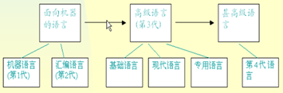
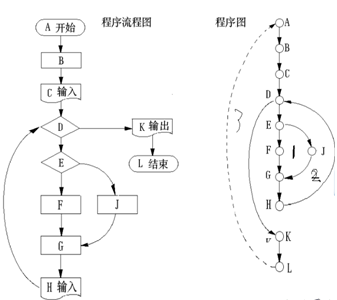
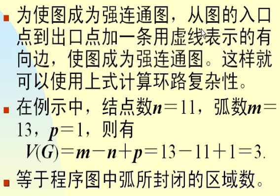

程序设计语言使用于书写计算机程序的语言。程序设计语言有3个方面的因素，即语法，语义和语用。语法标识程序的结构或形式。语义表示程序的含义。语用表示程序与使用者的关系。

程序设计语言的发展史

程序的复杂性度量
1，代码行度量法
出错率：每100行可能有的错误数目范围从0.04%—7%之间
对于少于100个语句的小程序，源代码行数与出错率是线性相关的。随着程序的增大，出错率以非线性方式增长。
2，McCabe度量法
又称环路复杂性度量，是一种基于程序控制流的复杂性度量方法
计算环路复杂性的方法：在一个强连通的有向图G中，公式如下：
V(G)=m-n+p
其中， V(G)是有向图G中环路个数，m是图G中弧数，n是图G中结点数，p是图G中的强连通分量个数。
举例：

3，Halstead的软件科学
运用Halstead的软件科学方法，我们可以求出程序的长度，程序量，程序量的比率（语言的抽象级别），程序员的工作量，程序的潜在错误等。